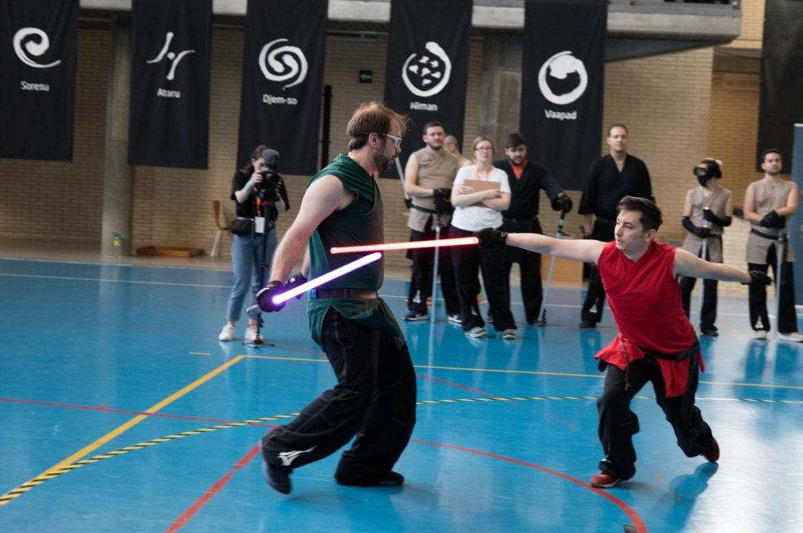
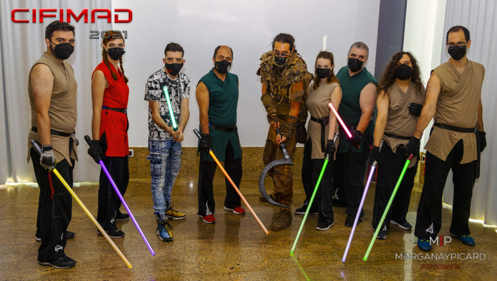
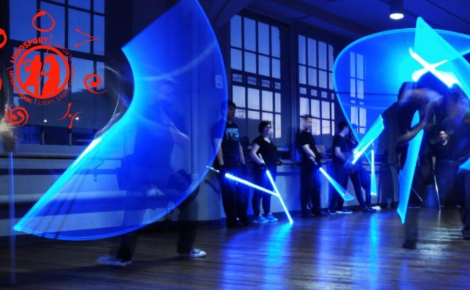
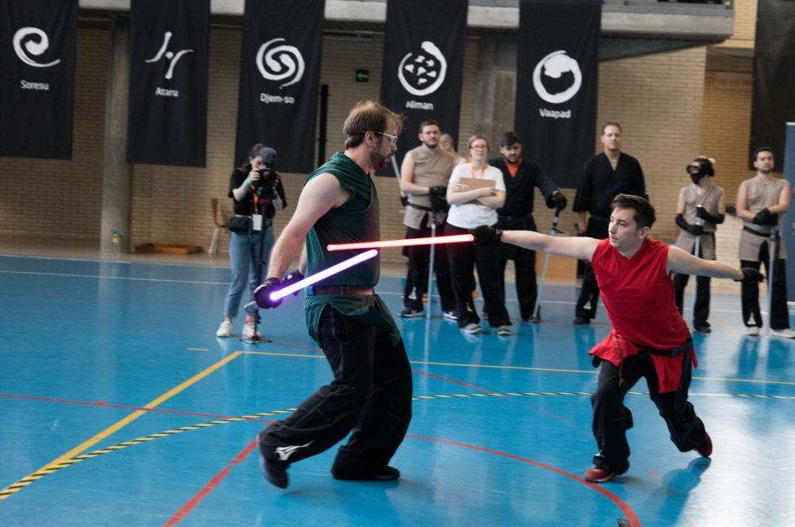
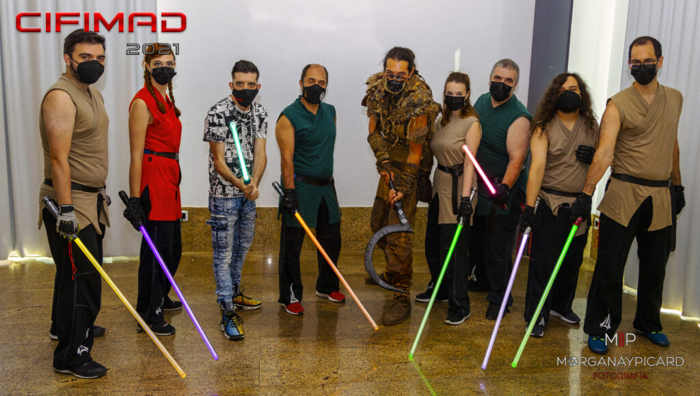
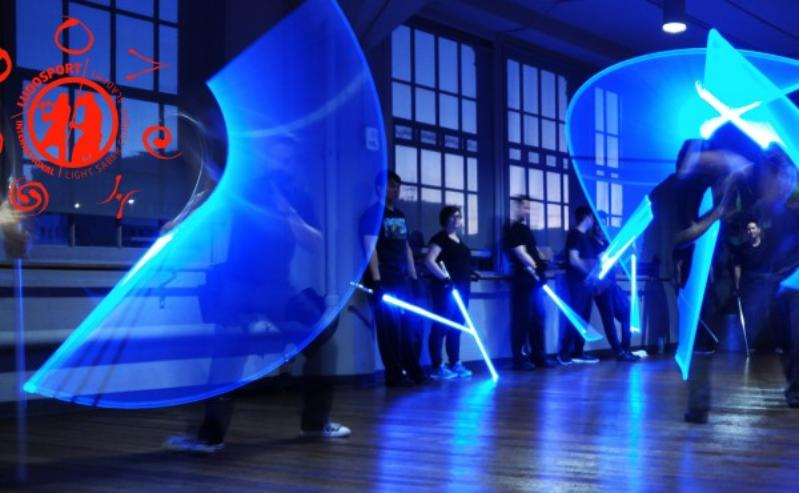

Academia LS León
LudoSport es un deporte competitivo basado en combates de sables de luz totalmente reales a partir de una técnica nueva y completamente funcional. Es el resultado de la pasión y el esfuerzo de tres amigos italianos (Simone Spreafico, Gianluca Longo y Fabio Monticelli: los tres Maestros Fundadores) con una gran pasión por el universo de Star Wars y con experiencia en diversas disciplinas de combate y artes marciales. Los Maestros Fundadores desarrollaron una nueva técnica y nueve estilos totalmente compatibles entre sí, utilizando como referencia e inspiración las películas, la literatura del universo Star Wars, donde se hace referencia a las peleas con sable de luz, y algunos elementos de distintos deportes de combate.
 




